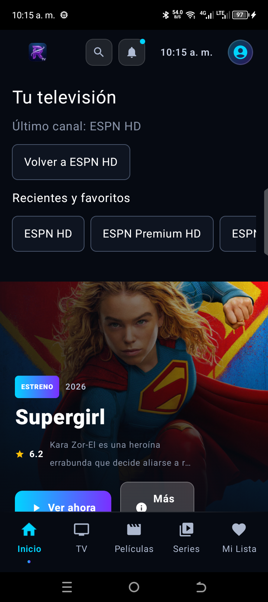
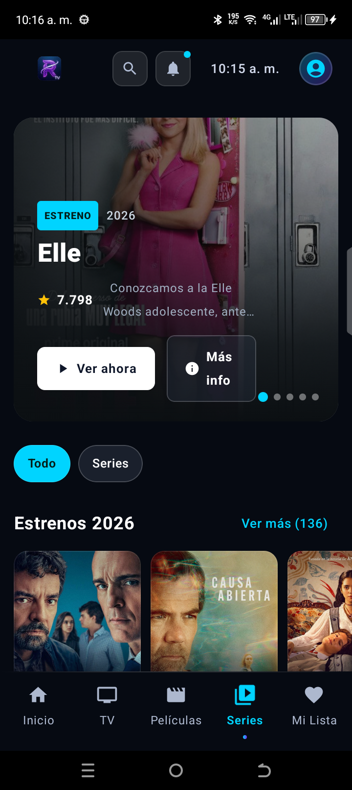
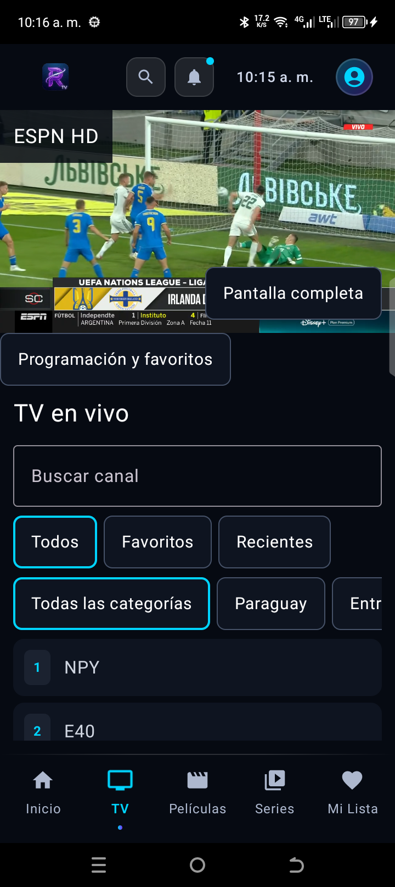

Hoy toca
darle play.
Abre RukaTV y encuentra los canales, películas y series de tu servidor. Tú eliges qué sigue.
Descargar RukaTVPara móvil, tablet y Android TV.


Capturas reales de RukaTV 1.5.1.
El catálogo depende de tu servidor.
En tu pantalla. Con tu cuenta.
TV en vivo · Películas · Series · FavoritosUna app.
Más de una forma de ver.
Un canal en directo, una película pendiente o el siguiente episodio. Explora RukaTV por dentro.

Tu televisión,
a mano.
Encuentra un canal y consulta la programación disponible. Desde Inicio puedes volver al último canal y acceder a tus recientes y favoritos.
- Canales organizados por categoría
- Recientes y favoritos en Inicio
- Guía de programación EPG
Elige una película.
O retoma la que dejaste.
Busca en el catálogo de tu servidor, filtra por género y abre la ficha de cada película. Tu progreso te permite continuar donde quedaste.
- Catálogo por géneros
- Búsqueda y filtros
- Continuar viendo
Un episodio más.
Tú decides cuándo.
Encuentra una serie, recorre sus temporadas y elige un episodio. Guarda tus favoritos para volver a ellos después.
- Temporadas y episodios
- Fichas de las series
- Mi lista de favoritos
Estas pantallas pertenecen a la app. Los títulos y canales disponibles varían según tu servidor.
Tu cuenta es
el punto de partida.
RukaTV se conecta a Rukaserver con los datos que te facilita el administrador de tu cuenta.
Ver cómo empezar- Servidor
- La dirección de tu Rukaserver
- Usuario
- El nombre de tu cuenta
- Contraseña
- Tu clave de acceso
Del APK
a tu pantalla.
Instala RukaTV directamente en tu Android. En Android TV, transfiere el APK al dispositivo y ábrelo con un gestor de archivos.
Descarga
Guarda el archivo
rukatv-1.5.1.apken el dispositivo donde vas a instalarlo.Permite instalar
Si Android te lo pide, permite que tu navegador o gestor de archivos instale apps de esta fuente.
Abre el APK
Toca el archivo y selecciona Instalar. Después, abre RukaTV.
Conecta tu cuenta
Introduce el servidor, tu usuario y contraseña para acceder al catálogo.